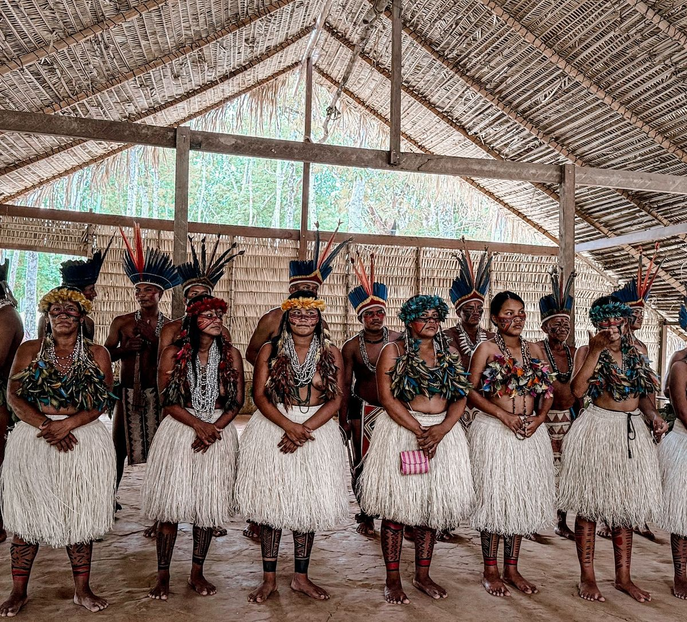
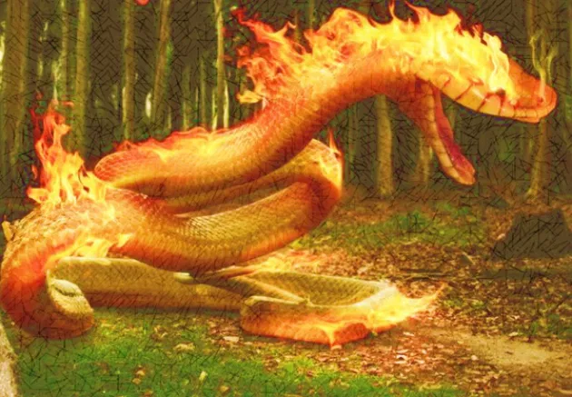
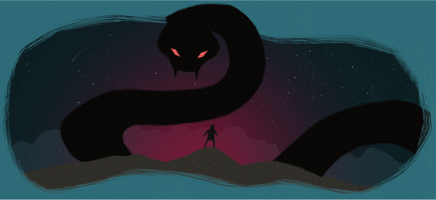
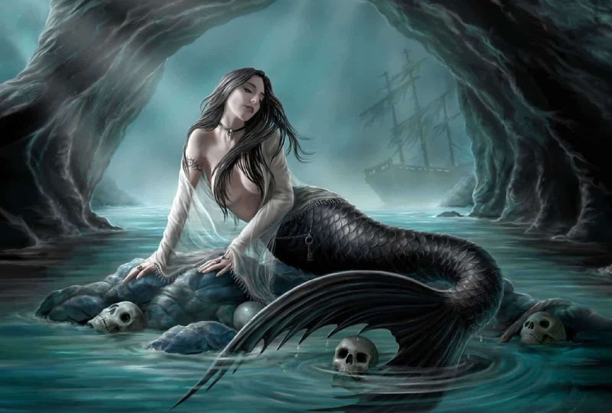

Flora
Lenda Iara
Quem foi ela e como surgiu a sua história?
Saiba maisFlora
Os rios da Mata Atlântica estão cercados por histórias, lendas e crenças populares transmitidas ao longo das gerações. Muitas comunidades acreditavam que essas águas possuíam espíritos protetores, criaturas misteriosas e forças ligadas à preservação da natureza.
04/05/2026

Os povos indígenas apreciavam uma importante forma de transmitir conhecimento, espiritualidade e ensinamentos sobre a natureza: a arte de contar mitos. Essas narrativas passavam de geração em geração e possuíam um forte significado cultural, ensinando respeito às florestas, aos animais e, principalmente, aos rios — elementos essenciais para a sobrevivência humana e para o equilíbrio da vida na Mata Atlântica.
Muitos desses mitos envolviam forças misteriosas ligadas às águas, demonstrando como os povos originários enxergavam os rios como espaços sagrados e espirituais. Entre as histórias mais conhecidas está a lenda da Iara, que fala sobre uma mulher de beleza hipnotizante cujo canto atraía homens para as águas, de maneira semelhante às sereias presentes em outras culturas. Em diversas versões da narrativa, ela era vista como uma entidade que protegia os rios contra pessoas mal-intencionadas e simbolizava os perigos escondidos nas águas profundas.
Outras narrativas também estavam relacionadas à proteção da natureza. O Boitatá, descrito como uma cobra de fogo, iluminava rios e matas durante a noite para assustar invasores e proteger a floresta. Já a Cobra Grande era representada como uma serpente gigantesca que habitava rios profundos, sendo responsabilizada por enchentes, mudanças no curso das águas, tempestades e desaparecimentos misteriosos. Esses mitos reforçavam a ideia de que a natureza possuía força própria e deveria ser respeitada.
Embora seja mais associado à Amazônia, na Mata Atlântica também existiam narrativas sobre o Boto-cor-de-rosa. Segundo a lenda, o boto se transformava em um homem elegante durante a noite e encantava mulheres em festas próximas aos rios. Além do caráter fantástico, o mito também era utilizado para explicar gravidezes inesperadas, principalmente em situações em que não havia a presença ou identificação de um pai. Dessa forma, a narrativa misturava mistério, espiritualidade e aspectos sociais das comunidades tradicionais.
Esses mitos demonstram como os povos indígenas construíam uma relação profunda de respeito e conexão com a natureza. Mais do que simples histórias, essas narrativas funcionavam como ensinamentos culturais, formas de preservar conhecimentos ancestrais e maneiras de conscientizar as comunidades sobre a importância dos rios e das florestas para a vida.



Flora
Quem foi ela e como surgiu a sua história?
Saiba maisFlora
Um mito que representa mais que uma história: representa um cuidado.
Saiba maisFlora
Crenças indígenas revelam o motivo de tanto respeito e apreciação pela água.
Saiba mais